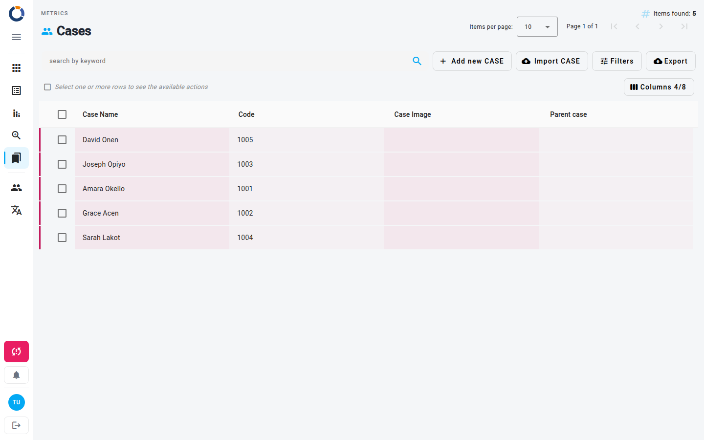

الحالات
صفحة الحالات هي مساحة عمل مركزية لتتبّع سجلات الحالات الفردية وإدارتها. كل حالة هي سجل منظّم يمكن أن يحتوي على اسم ورمز وصورة وعلاقة بحالة أصل وملاحظات وسمات إضافية. من هذه الصفحة يمكنك إنشاء حالات جديدة، وتحرير الحالات الموجودة أو عرضها، وطباعة بطاقات الحالات، وحذف السجلات، وتصدير قائمة الحالات — كل ذلك من جدول تفاعلي واحد.

نظرة عامة على الجدول
يعرض الجدول الأعمدة التالية افتراضيًا:
- Case Name – الاسم المُعيَّن للحالة (قابل للفرز).
- رمز – رمز يحدّد الحالة. يولّده Dino: أنت لا تُدخله، ولا يظهر في نافذة الحالة.
- Case Image – ملف صورة مرفوع يمثّل الحالة.
- الحالة الأصل – اسم أي حالة أصل تنتمي إليها هذه الحالة.
الأعمدة الإضافية — ID وNotes وتاريخ الإنشاء وسمات إضافية — مخفية افتراضيًا. انقر على أعمدة أعلى الجدول لاختيار الأعمدة التي تظهر. يمكنك أيضًا سحب رؤوس الأعمدة لإعادة ترتيبها، وتعرض الصفحة العدد الإجمالي للعناصر التي تم العثور عليها بجانب أداة ترقيم الصفحات.
العمل مع حالة واحدة
مرّر المؤشر فوق صف لإظهار أيقونتي تحرير وعرض. انقر على الصف لتحديده: يعرض عندئذٍ شريط الإجراءات أعلى الجدول كل الإجراءات:
- تحرير – يفتح نافذة يمكنك فيها تعديل تفاصيل الحالة.
- طباعة – يولّد بطاقة PDF قابلة للطباعة للحالة.
- عرض – يفتح نافذة للقراءة فقط لفحص معلومات الحالة.
- حذف – يفتح نافذة تأكيد لإزالة الحالة نهائيًا.
العمل مع حالات متعددة
- حدّد صفًا واحدًا أو أكثر باستخدام مربعات الاختيار في العمود الأول.
- عند تحديد صف واحد، تصبح كل إجراءاته متاحة في شريط الإجراءات أعلى الجدول.
- عند تحديد عدة صفوف، لا تبقى سوى الإجراءات الجماعية — حاليًا حذف.
الحذف نهائي
لا يمكن استرجاع الحالات المحذوفة. راجع تحديدك بعناية قبل تأكيد الحذف الجماعي. لا يمكن حذف حالة تستخدمها نماذج form، أو حالة لها حالات فرعية؛ راجع Metrics.
إنشاء حالة
- انقر على Add new CASE في شريط الأدوات أعلى الجدول.
- في النافذة، املأ تفاصيل الحالة. الحقول الاختيارية مُعلَّمة ب(optional).
- Case Name – أدخل اسمًا وصفيًا.
- Case Image – ارفع ملف صورة.
- الحالة الأصل – اربط هذه الحالة اختياريًا بحالة أصل موجودة.
- Notes – أضف أي ملاحظات ذات صلة.
- انقر على حفظ لإنشاء الحالة.
استيراد الحالات
انقر على Import CASE في شريط الأدوات لرفع الحالات دفعةً واحدة من ملف .xls أو .xlsx أو .csv. ترشدك صفحة الاستيراد خلال رفع الملف وتعيين أعمدته ومراجعة النتيجة. الحالات التي يوجد اسمها مسبقًا يُعاد استخدامها ولا تُحدَّث؛ والرمز يولّده Dino ولا يمكن استيراده.
البحث والتصفية
استخدم شريط الأدوات لتضييق نطاق الجدول:
- البحث بالكلمات المفتاحية – اكتب في حقل البحث لمطابقة النص عبر الحقول المعروضة.
- عوامل التصفية – افتح لوحة التصفية لتعيين من تاريخ وحتى تاريخ، اللذين يصفّيان حسب تاريخ الإنشاء، ثم انقر على بحث. تُظهر الشارة على زر عوامل التصفية عدد عوامل التصفية النشطة.
- تظهر عوامل التصفية المُطبَّقة كشرائح أسفل شريط الأدوات؛ انقر على أيقونة الإلغاء في أي شريحة لإزالة عامل التصفية ذلك.
تصدير الحالات
- انقر على تصدير في شريط الأدوات.
- اختر ما تريد تصديره: عناصر في الصفحة (الافتراضي)، أو العناصر المطابقة لعوامل التصفية، أو كل العناصر.
- اختر الصيغة: csv أو xlsx أو splitted xlsx، ثم انقر على تصدير.
صفحات ذات صلة
- Metrics Overview – العودة إلى لوحة المقاييس الرئيسية.
- Thematic Areas – تنظيم الحالات حسب المجال الموضوعي.
- Locations – ربط الحالات بمواقع جغرافية.
- Organizations – ربط الحالات بالمنظمات.
- Projects – تجميع الحالات ضمن مشاريع.